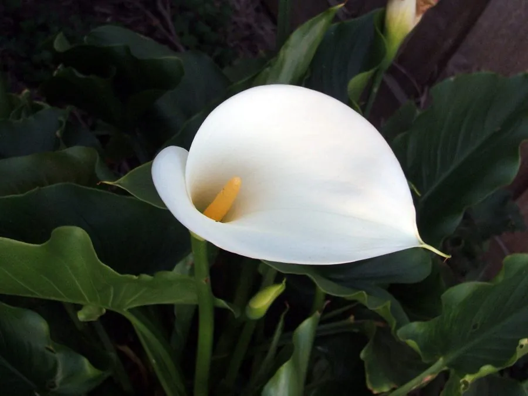

花卉与草本 · 植物界
马蹄莲 Zantedeschia aethiopica

天南星科多年生草本，白色佛焰苞如马蹄展开、肉穗花序居中，是优雅的切花与盆栽，原产南非湿地。
- 分类
- 门被子植物门纲木兰纲目泽泻目科天南星科属马蹄莲属
- 栖息环境
- 南非的沼泽、湿地与河岸，喜温暖、湿润、半阴
- 地理分布
- 原产南非，现世界各地栽培，中国南方可露地种植
- 保护级别
- 暂无评估
物种志
马蹄莲为天南星科马蹄莲属多年生草本，株高 60–100 厘米，地下具粗壮根状茎。叶片箭形至心形，长 20–45 厘米，有长叶柄。花葶自叶丛抽出，佛焰苞白色、展开呈马蹄形，中央为黄色的肉穗花序，花期 3–6 月；果实为浆果。
马蹄莲原产南非的沼泽和湿地，喜温暖、湿润和半阴的环境，耐寒性一般，冬季需保护越冬。它白色的佛焰苞形态优雅，是婚礼、花束和花艺中常见的切花，也可作盆栽观赏。需要注意的是，马蹄莲全株含草酸钙结晶，有毒，误食会引起口腔和消化道刺痛、肿胀，修剪或插花时应戴手套，并避免儿童和宠物接触。
形态与习性
- 株高60–100 厘米，具粗壮根状茎
- 花期3–6 月
- 果期花后结浆果
- 光照喜半阴散射光
- 水分喜湿润，忌积水
- 土壤肥沃、富含腐殖质的壤土
- 繁殖分株、块茎繁殖
- 主要用途切花、婚礼花艺、盆栽（有毒）
趣味知识
- 马蹄莲的“花”其实是白色佛焰苞，真正的花是中央的肉穗花序。
- 它是婚礼和花束中常用的切花，象征纯洁与优雅。
- 全株含草酸钙结晶，有毒，误食会引起口腔刺痛。
- 马蹄莲原产南非湿地，喜湿润，盆栽时不能缺水。